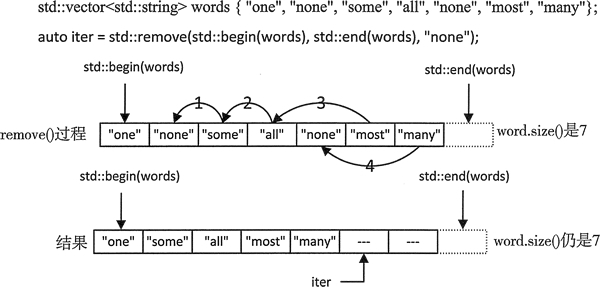
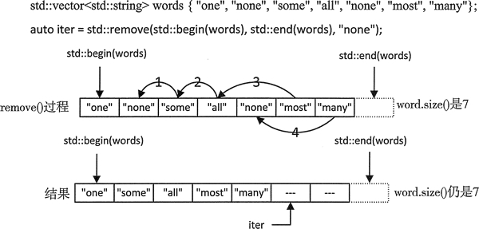

首页 > 编程笔记
C++ vector删除元素（数据）详解
正像所说的那样，只能通过容器的成员函数来删除元素。可以通过使用 vector 的成员函数 clear() 来删除所有的元素。例如：
可以使用 vector 的成员函数 pop_back() 来删除容器尾部的元素。例如：
注意，vector 也有成员函数 swap()，这个函数用来交换两个 vector 容器中的元素。显然，这两个容器的元素类型必须相同。全局的 swap() 函数只要将两个容器作为参数，也可以交换它们的元素。
如果要去掉容器中多余的容量，例如不再向容器中添加新元素，那么可以通过使用成 员函数 shrink_to_fit() 来实现：
可以使用成员函数 erase() 来删除容器中的一个或多个元素。如果只删除单个元素，那么只需要提供一个参数，例如：
如果要移除一个元素序列，只需要传入两个迭代器，用来指定移除元素的范围。例如：
remove() 算法由定义在 algorithm 头文件中的模板生成，它可以删除匹配特定值的一段元素。例如：

图 1 remove() 算法的工作原理
如果在 remove() 操作后输出 words 中的元素，只会输出前 5 个元素。尽管 size() 返回的值仍然是 7，而且最后两个元素仍然存在，但是它们被替换成了空字符串对象。为了摆脱这些多余的元素，可以使用成员函数 erase()。remove() 返回的迭代器可以这样使用：
假设生成了一个初始容量为 1000 个元素的 vector，但实际上存储了 1001 个元素。这样就会有用于 499 个元素的多余容量。如果元素是数组或其他不会占用太多空间的对象，这不会有任何问题。但是如果对象非常大，例如每个 10KB，那么程序需要分配几乎 5MB 的多余内存。所以，最好可以稍微高估 vector 的初始大小，而不能低估。
当然，也能自己管理内存的分配。可以比较容器的大小和容量，当需要内存时，就可以通过容器的 reserve() 函数来增加容器的容量。例如：
std::vector<int> data(100, 99);// Contains 100 elements initialized to 99 data.clear(); // Remove all elements第一条语句创建了一个有 100 个 int 型元素的 vector 对象，它的大小和容量都是 100；所有元素的初始值都是 99。第二条语句移除了所有的元素，因此大小变为 0，因为这个操作并没有改变容器的容量，所以容量还是 100。
可以使用 vector 的成员函数 pop_back() 来删除容器尾部的元素。例如：
std::vector<int> data(100, 99); // Contains 100 elements initialized to 99 data.pop_back(); // Remove the last element第二条语句移除了最后一个元素，因此 data 的大小变为 99，容量还是 100。只要不在意元素的顺序，就可以通过删除最后一个元素的方式来删除容器的任何元素，这不需要移动大量元素。假设要删除 data 中的第二个元素，可以像这样操作：
std::swap(std::begin(data)+1,std::end(data)-1); // Interchange 2nd element with the last data.pop_back(); // Remove the last element第一条语句调用了模板函数 swap()，它在头文件 algorithm 和 utility 中都有定义。这个函数将第二个元素和最后一个元素互相交换。然后调用 pop_back() 移除最后一个元素，这样就从容器中移除了第二个元素。
注意，vector 也有成员函数 swap()，这个函数用来交换两个 vector 容器中的元素。显然，这两个容器的元素类型必须相同。全局的 swap() 函数只要将两个容器作为参数，也可以交换它们的元素。
如果要去掉容器中多余的容量，例如不再向容器中添加新元素，那么可以通过使用成 员函数 shrink_to_fit() 来实现：
data.shrink_to_fit(); // Reduce the capacity to that needed for elements不管这个操作是否依赖 STL 的实现，如果它生效了，那么这个容器现有的迭代器都失效，所以在执行完这个操作后，最好重新获取迭代器。
可以使用成员函数 erase() 来删除容器中的一个或多个元素。如果只删除单个元素，那么只需要提供一个参数，例如：
auto iter = data.erase(std::begin(data)+1); //Delete the second element删除一个元素后，vector 的大小减 1；但容量不变。会返回一个迭代器，它指向被删除元素后的一个元素。这里的返回值和表达式 std::begin(data)+1 相关；如果移除了最后一个元素，会返回 std::end(data)。
如果要移除一个元素序列，只需要传入两个迭代器，用来指定移除元素的范围。例如：
// Delete the 2nd and 3rd elements auto iter = data.erase(std::begin(data)+1,std::begin(data)+3);不要忘记，第二个迭代器指向这段元素末尾的下一个位置。上面的语句删除了位于 std::begin(data)+1 和 std::begin(data)+2 的元素。返回的迭代器指向被删除元素后的位置，它是 std::begin(data)+1 ；如果删除了最后一个元素，它就是 std::end(data)。
remove() 算法由定义在 algorithm 头文件中的模板生成，它可以删除匹配特定值的一段元素。例如：
std::vector<std::string> words { "one", "none","some", "all”, "none", "most","many"};
auto iter = std::remove(std::begin(words), std::end(words), "none");
第二条语句在头两个参数指定的元素范围内，移除了所有匹配 remove() 的第三个参数 string("none") 的元素。移除元素这个表述有一点误导，remove() 是一个全局函数，所以它不能删除容器中的元素。remove() 移除元素的方式和从字符串中移除空格的方式相似，都是通过用匹配元素右边的元素来覆盖匹配元素的方式移除元素。图 1 展示了这个过程：
图 1 remove() 算法的工作原理
如果在 remove() 操作后输出 words 中的元素，只会输出前 5 个元素。尽管 size() 返回的值仍然是 7，而且最后两个元素仍然存在，但是它们被替换成了空字符串对象。为了摆脱这些多余的元素，可以使用成员函数 erase()。remove() 返回的迭代器可以这样使用：
words.erase(iter, std::end(words));//Remove surplus elements这被叫作 erase-remove，执行删除操作后，iter 指向最后一个元素之后的位置，所以它标识了被删除序列的第一个元素，被删除序列的结束位置由 std::end(words) 指定。当然，在一条语句中，也能先移除元素，然后再删除末尾不想要的元素：
words.erase(std::remove(std::begin(words), std::end(words),"none"), std::end(words));remove() 算法返回的迭代器作为 erase() 的第一个参数，erase() 的第二个参数是所指向容器中最后一个元素后一个位置的迭代器。了解如何为 vector 容器分配额外容量，可以让你明白会产生多少额外开销，以及可分配的内存量。下面是一个示例，可以让你了解到这一点：
// Understanding how capacity is increased in a vector container #include <iostream> // For standard streams #include <vector> // For vector container int main() { std::vector <size_t> sizes; // Record numbers of elements std::vector <size_t> capacities; // and corresponding capacities size_t el_incr {10}; // Increment to initial element count size_t incr_count {4 * el_incr}; // Number of increments to element count for (size_t n_elements {}; n_elements < incr_count; n_elements += el_incr) { std::vector<int> values(n_elements); std::cout << "\nAppending to a vector with " << n_elements << " initial elements:\n"; sizes.push_back(values.size()); size_t space {values.capacity()}; capacities.push_back(space); // Append elements to obtain capacity increases size_t count {}; // Counts capacity increases size_t n_increases {10}; while (count < n_increases) { values.push_back(22); // Append a new element if (space < values.capacity()) // Capacity increased... { // ...so record size and capacity space = values.capacity(); capacities.push_back(space); sizes.push_back(values.size()); ++count; } } // Show sizes & capacities when increments occur std::cout << "Size/Capacity: "; for (size_t i {}; i < sizes.size(); ++i) std::cout << sizes.at(i) << "/" << capacities.at(i) << " "; std::cout << std::endl; sizes.clear(); // Remove all elements capacities.clear(); // Remove all elements } }这个示例中的操作很简单。向容器中添加元素，直到不得不增加容器容量，这时候容器的大小和容量会被保存在 sizes 和 capacities 容器中。对不同初始元素个数的容器重复几次这种操作。编译器得到的输出结果如下：
Appending to a vector with 0 initial elements:
Size/Capacity: 0/0 1/1 2/2 3/4 5/8 9/16 17/32 33/64 65/128 129/256 257/512
Appending to a vector with 10 initial elements:
Size/Capacity: 10/10 11/20 21/40 41/80 81/160 161/320 321/640 641/1280 1281/2560 2561/5120 5121/10240
Appending to a vector with 20 initial elements:
Size/Capacity: 20/20 21/40 41/80 81/160 161/320 321/640 641/1280 1281/2560 2561/5120 5121/10240 10241/20480
Appending to a vector with 30 initial elements:
Size/Capacity: 30/30 31/60 61/120 121/240 241/480 481/960 961/1920 1921/3840 3841/7680 7681/15360 15361/30720
假设生成了一个初始容量为 1000 个元素的 vector，但实际上存储了 1001 个元素。这样就会有用于 499 个元素的多余容量。如果元素是数组或其他不会占用太多空间的对象，这不会有任何问题。但是如果对象非常大，例如每个 10KB，那么程序需要分配几乎 5MB 的多余内存。所以，最好可以稍微高估 vector 的初始大小，而不能低估。
当然，也能自己管理内存的分配。可以比较容器的大小和容量，当需要内存时，就可以通过容器的 reserve() 函数来增加容器的容量。例如：
std::vector <size_t> junk {1, 2, 3};
for(size_t i {} ; i<1000 ; ++i)
{
if(junk.size() == junk.capacity()) // When the size has reached the capacity...
junk.reserve(junk.size 0*13/10); // ...increase the capacity
junk.push_back(i);
}
这里容量增量为最大值的 30% 而不是默认的 50%。容量增量不需要一定是当前大小的百分比。可以将 junk 指定为 reserve() 的参数。例如 capacity()+10，无论当前大小为多少，都会将当前的容量增加 10 个元素大小。不要忘了当使用 reserve() 为容器增加容量后，现有的容器迭代器都会失效。关注公众号「站长严长生」，在手机上阅读所有教程，随时随地都能学习。内含一款搜索神器，免费下载全网书籍和视频。

微信扫码关注公众号